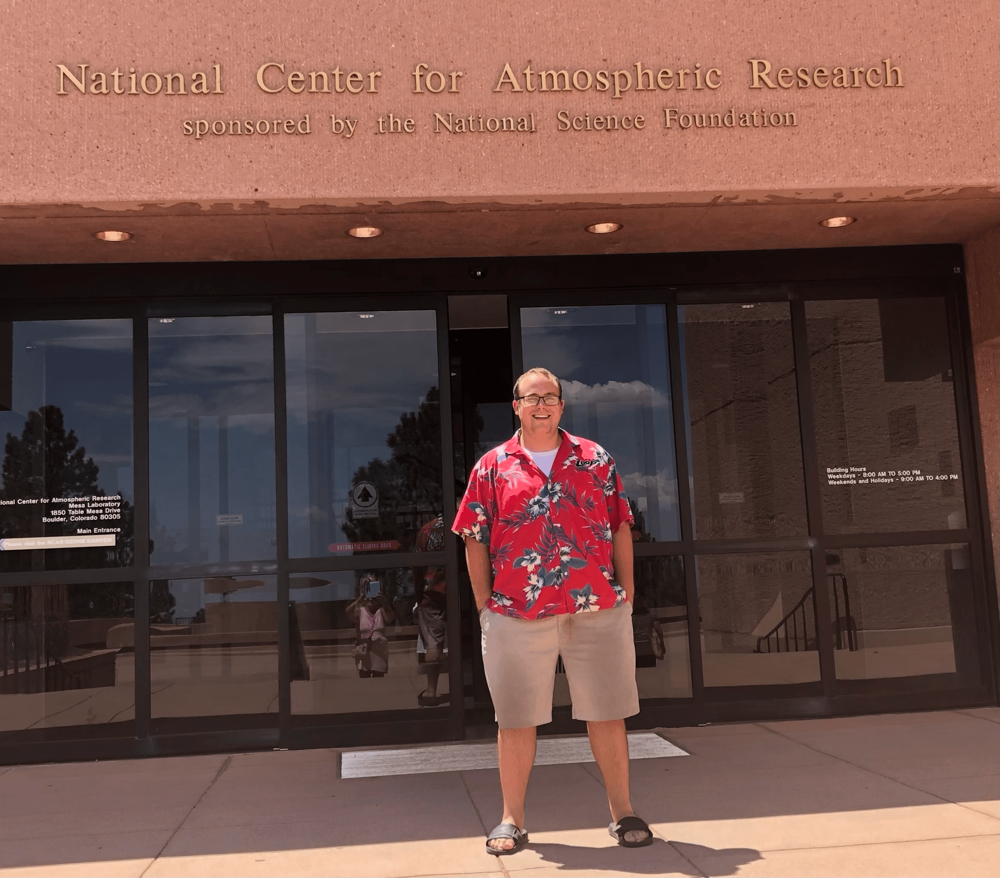

All Posts
SciPy 2022 Reflection
- 17 July 2022
This past week, I attended my third SciPy conference, with this being the first in-person event.
 The AT&T Hotel and Conference Center near the University of Texas Campus in Austin, Texas.
The AT&T Hotel and Conference Center near the University of Texas Campus in Austin, Texas.
Earthcube Annual Meeting Takeaways
- 20 June 2022
Last week, I attended the Earthcube Annual Meeting in San Diego, California!
Earthcube is an organization, funded by the National Science Foundation, which is focused around facilitating communities and practices related to geoscience data and cyberinfrastructure (the computers + software needed to get science done). From their official information page:

Moving to Illinois (Again)
- 06 June 2022
It has been a while since my last post! Over the past ~9 months, I started a new job at Argonne National Laboratory and relocated to the state of Illinois, more specifically the Western Suburbs of Chicago, Illinois. I work with Scott Collis, a scientist and Geospatial Computing, Innovations, and Sensing (GCIS) Department Head. He is also the inventor of the Python Atomspheric Radiation Measurement Toolkit (Py-ART), one of the go-to packages when working with weather radar data in Python.
One of the nicest things about relocating is the proximity to my family in Wisconsin. I have gone back to see them several times already, spending quite a bit of time on Delavan Lake (shown below)

Westward Bound: Midwestern Grad Student to a Colorado Software Engineer
- 30 August 2021
September is fast approaching which marks six months since I started my role as a software engineer at the National Center for Atmospheric Research. It is crazy to think that just six months ago, I was pushing to finish the first draft of my Master’s Thesis. So much has changed since then.
I started at the University of Illinois in the Atmospheric Science graduate program in Fall of 2019, after completing the Unidata Summer Internship Program, moving from Boulder to Champaign. I remember leaving one of the parks in the Table Mesa neighborhood thinking that I wanted to come back to Boulder at some point…
